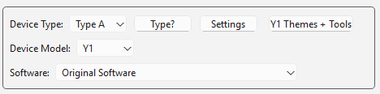

Before we start
Stock UI means the original software/firmware your device had or has now.
This guide teaches you both how to update the original firmware; and how to install Rockbox, while keeping the original firmware, which lets you be able to boot into both firmwares at any time.
Methods of installation
- Innioasis Updater - application on all operating systems. Easy, reliable, guide written here.
- MTKclient - uses command line. No written guide for Y1. Download
- SP Flash Tool - Windows only, has a GUI. Download + required drivers
This guide covers the Innioasis Updater, the recommended method as it combines both methods into a single application, is beginner friendly, fully documented here, and is most reliable.
Requirements
- Y1 (your Innioasis Y1 device)
- USB-C data cable: the cable it came with works perfectly
- Computer with: Windows (Best) or MacOS or Linux (Ubuntu recommended)
Choose what to do:
Why would I want Rockbox?
Pros
- Better UI and UX: 23 years of team support
- Quality of life settings, and deep Android customization
- Sound settings: Equalizer, crossfade, max volume limit, channel config, stereo width, dithering...
- Deep sorting: by Album Artist, Genre, Year, Composer, First Letter, User Rating, Recently Added...
- More customization: vast themes collection
Cons
- Slightly worse battery life. Workaround: enable Airplane mode
- No videos. Possible workaround: find a video plugin
Updating Original Stock Firmware
In the updater:
- Choose your Device type, which is either type A or B:
- Always choose Type A first, and only switch to Type B if your scroll wheel doesn't work after installation.
- Make sure your Device model is set to the Y1.
- Choose Original Software in the Software type

Choose the latest version.
Installation Process
- Select your build, and hit Install / Restore on the bottom
- Wait until the zip installs and extracts (this can take a while)
- Then, whenever the Updater tells you to, Power off your Y1. On Windows, Powering off should be enough, however on other OSes, it might prompt you to take a paperclip and hit a secret button on the bottom, in between the headphone jack and the charging port, until you hear a CLICK. Then continue.
- Connect your Y1 via a compatible USB-C cable
- Put down your Y1, and don't touch it
- If all went well, the Updater should congratulate you and prompt you to Disconnect the cable

Installing Rockbox
In the updater:
- Choose your Device type, which is either type A or B.
- Always choose Type A first, and only switch to Type B if your scroll wheel doesn't work after installation.
- Make sure your Device model is set to the Y1.
- Choose Rockbox ROM in the Software type

Choosing a Version
Decide whether you want a Rockbox version which will install Rockbox and update your main Stock OS, or just to update your Stock OS.
- "Nightly" versions are BETA. Unless you know what you're doing, don't choose these.
- "Stable" versions are stable builds you should choose.
- 240p (also called "iPod Themes Compatible") will have more themes, but slightly worse resolution
- 360p (also called "Y1 Theme Compatible) will have less themes, but slightly better resolution.

Installation Process
- Select your build, and hit Install / Restore on the bottom
- Wait until the zip installs and extracts (this can take a while)
- Then, whenever the Updater tells you to, Power off your Y1. On Windows, Powering off should be enough, however on other OSes, it might prompt you to take a paperclip and hit a secret button on the bottom, in between the headphone jack and the charging port, until you hear a CLICK. Then continue.
- Connect your Y1 via a compatible USB-C cable
- Put down your Y1, and don't touch it
- If all went well, the Updater should congratulate you and prompt you to Disconnect the cable
Finish installation
Turn on your Y1 (hold down the middle button), and if all went well, everything should work!
Switching firmware (if you have both)
Rockbox → Stock: System > Reboot to Stock Firmware
Stock → Rockbox: Press the top button; Back (Menu) first and hold it, then hold the play/pause button at the same time as Back. Continue this for 10-15 seconds and the screen should turn black.
Rockbox themes
Find themes
- Download the Rockbox fontpack (required for many themes) here
- Download 240p themes here
- Download 360p themes here
After finding and downloading a theme, let's add it to your Y1's Rockbox. No, Original Software themes are not compatible with Rockbox themes, and vice versa.
Smart Drop themes
- Open the Innioasis Updater app
- Connect your Y1 via a cable; allow data access
- Drag and drop the theme folder into the app
Manually upload themes
- Connect your V1 via a cable; allow data access
- Go to your File Explorer / Files app
- Find your Y1 Android directory and open it
- Extract your downloaded theme zip
- Drag and drop your extracted theme folder
- It will ask you whether to replace .rockbox, allow it.
After downloading a theme
- Power on your Y1, go to Settings
- Go to Browse Theme Files -> select your theme
Stock themes
Find themes
- Find themes here
After finding and downloading a theme, let's add it to your Y1. No, Original Software themes are not compatible with Rockbox themes, and vice versa.
Direct Install themes
- Go to the themes page
- Connect your Y1 via a cable; allow data access
- Use supported browser: Chrome / Edge / Opera
- Click "Choose Y1 Themes Folder" and locate Y1's "Themes" Folder
- Find a theme, then click "Direct Install" (really easy)
Manually upload themes
- Connect your V1 via a cable; allow data access
- Go to your File Explorer / Files app
- Find your Y1 Android directory and open it
- Extract your downloaded theme
- Drag and drop your extracted theme folder into the themes folder
After downloading a theme
- Power on your Y1, go to Settings
- Go to Themes -> select your theme
Creating themes
Basics
- Download the preset theme MelodyMuncher
- Create a GitHub account here
- Extract your downloaded theme zip
- Rename the folder to your theme name (letters and numbers only)
Customize theme
- Replace images with your own (keep same file names)
- Edit config.json: change title, author, and description
Upload to GitHub
- Go to the themes repository here
- Click "Fork"
- In your fork (repository copy), click Add file → Upload files
- Drag your entire theme folder into the upload area
- GitHub shows all files to be uploaded
- Scroll down, click Commit changes
- Click Contribute → Open pull request
Notes
- Theme information priority: config.json > themes.json > folder name
- config.json structure includes theme_info (title, author, authorUrl, description), itemConfig (colors and images), menuConfig, and dialogConfig
- File naming: cover.png (cover), screenshot.png (screenshots), 1.png (selected background), 2.png (right arrow). Suffixed variants like 1_YS.png take priority over 1.png
- Theme creation documentation also here